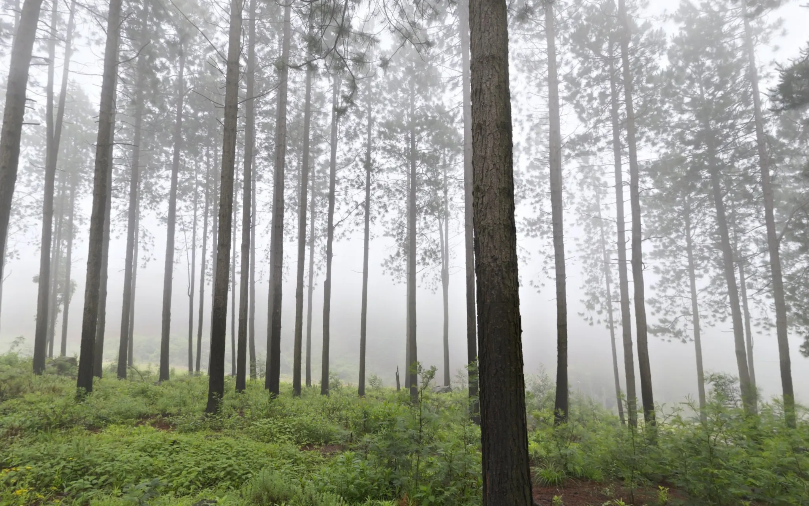

Nature · Concept N005
Fieldnote Optics
A forest in fog, and one pair of glasses. The mist only clears where you look.
0 of 4 field notes found

Magnification
Focus Sharp
The glasses
Three ways to look.
More magnification brings things closer and makes the view narrower. Pick one and try it in the lens above.
-
6×
Wide
For forest and low light. The widest view and the brightest image, and the easiest to hold still.
-
8×
Field
The all-rounder. Enough reach to read the bark across a clearing, still steady in one hand.
-
10×
Reach
For open valleys and far ridges. The narrowest view of the three; brace your elbows.
Field notes
Four notes, hidden in the fog.
Each one is pencilled onto the photo and only shows through the lens. Find them yourself, or ask for a hint.
-
01
Not found yet. Keep looking.Nearest trunk. Bark in long vertical plates; everything behind it is mist.
-
02
Not found yet. Keep looking.Fog line. By the fourth row of trunks the forest is gone.
-
03
Not found yet. Keep looking.Light from straight above. Overcast morning, no shadows on the bark.
-
04
Not found yet. Keep looking.Green undergrowth only where the canopy opens.
How the glasses work
Two circles, one mask.
The view outside the lens is the photo under a wash of mist. Inside, the same photo is shown sharp and scaled around the lens centre, cut out by two overlapping circles that chase your pointer. Raise the magnification and the circles shrink, the way a real field of view does.
- Magnification
- 8×lens radius 100%
- Focus
- Sharpwheel at 62 of 100
- Photo
- Misty PinesGreg Zaal · Poly Haven, CC0 · Mpumalanga, South Africa
- Object
- BinocularsDerek Wight · Poly Haven, CC0 · 19,248 triangles
Book a field morning
Two hours, one misty wood.
Walk slowly with a guide and try all three glasses before you choose. This is a concept booking: the form works, but nothing is sent anywhere.
Concept · not sent